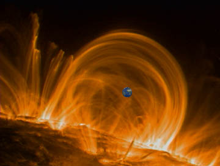

The dark spot represents the size of the Earth!The size of the Earth compared to a small part of the Sun's atmosphere. In the fall/2000 NASA released this picture of gigantic gas loops projected from the Sun's surface taken by the TRACE explorer.
The gas fountains form arches (some more than 300,000 miles high and capable of spanning 30 Earths) as gas emerges from the solar surface, is heated and rises while flowing along the solar magnetic field, then cools and crashes back to the surface at more than 60 miles per second (100 kilometers per second). Millions of different-sized arches, called coronal loops, comprise the corona, and a 30-year old theory assumes that the loops are heated evenly throughout their height. The TRACE observations show that instead, most of the heating must occur at the bases of the coronal loops, near where they emerge from and return to the solar surface.
These images are false color pictures of ultraviolet light
emitted by
the hot gas that comprises
the coronal loops. Ultraviolet light is invisible to the human
eye,
but detectable by the special
instruments on board TRACE. White represents the brightest
ultraviolet
light. Note how small the Earth in on this scale.